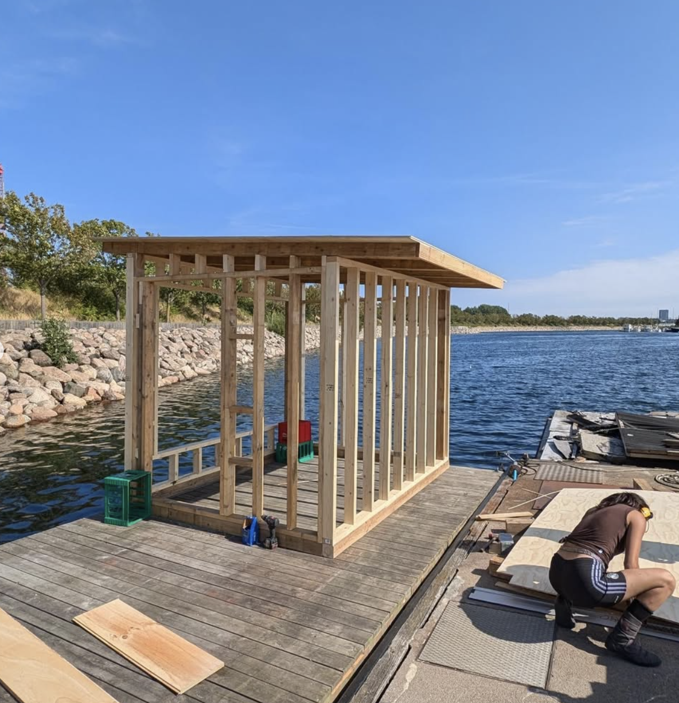
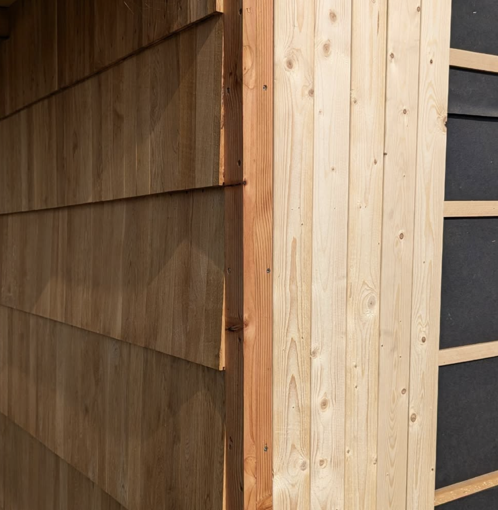
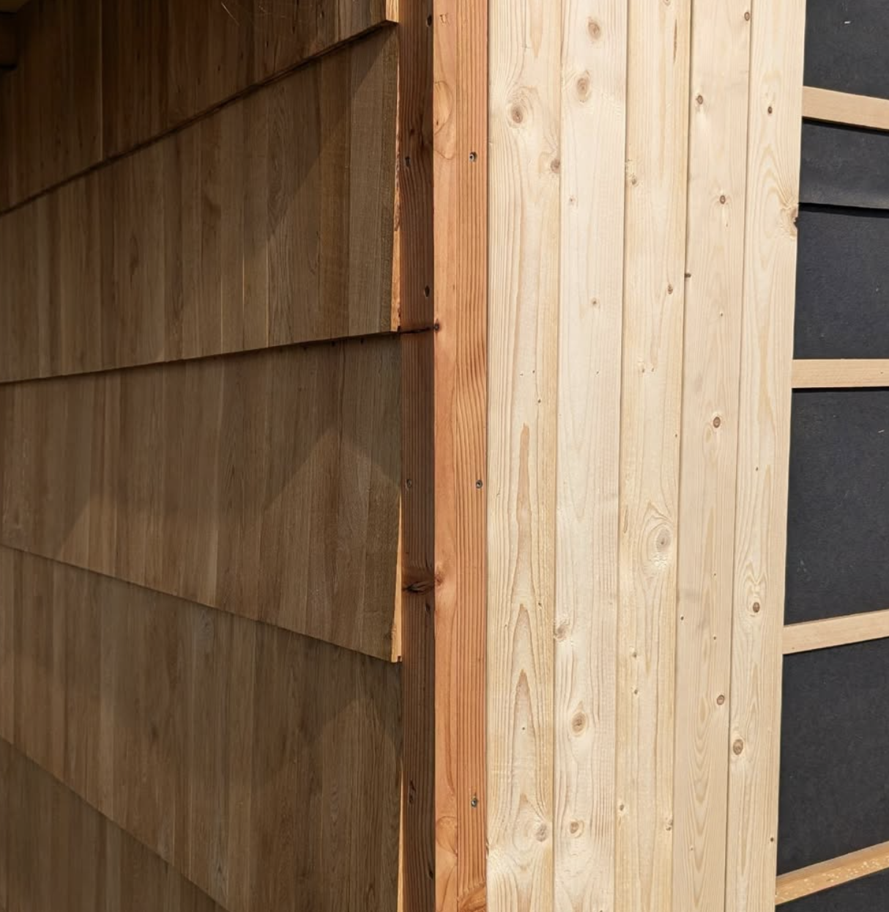

FLOATING SAUNA
2024 – I spent the summer in Copenhagen working on design-build projects, including two saunas. This one was constructed from an old barge and transformed into a wood-fired sauna. Located in a marina, it now serves as a gathering space for members of the local sauna club. I contributed to both the design and construction, gaining experience in adaptive reuse and community-oriented design.
 
